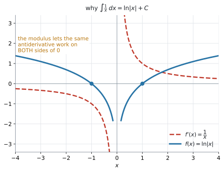
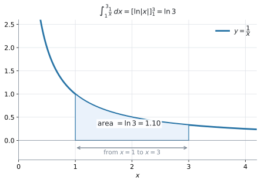

AHL 5.11a — Standard integrals（基本の積分と定積分）
- \(\sin x\)、\(\cos x\)、\(\dfrac{1}{\cos^{2}x}\)、\(e^{x}\) の不定積分を書ける。
- \(n = -1\) のとき、つまり \(\displaystyle\int\frac{1}{x}\,dx = \ln|x| + C\) を使える。
- \(x^{n}\) を \(n\) が分数のときにも積分できる。
- \(\sqrt{x}\) や \(\dfrac{3}{x^{2}}\) をべき乗の形に書き直してから積分できる。
- \(+C\) を必ず書き、boundary condition から \(C\) の値を決められる。
- 定積分の式を先に書き、数値で答える問題では電卓で値を出せる。
- 電卓を Radian にしてから計算できる。
The idea
1. 微分の表を、逆から読むだけです
積分は微分の逆です（SL 5.5）。ですから、新しく覚えることはありません。AHL 5.9a の表を、右から左へ読むだけです。
| 微分すると（AHL 5.9a） | 積分すると（このページ） |
|---|---|
| \(\sin x \ \to \ \cos x\) | \(\displaystyle\int \cos x\,dx = \sin x + C\) |
| \(\cos x \ \to \ -\sin x\) | \(\displaystyle\int \sin x\,dx = -\cos x + C\) |
| \(\tan x \ \to \ \dfrac{1}{\cos^{2}x}\) | \(\displaystyle\int \dfrac{1}{\cos^{2}x}\,dx = \tan x + C\) |
| \(e^{x} \ \to \ e^{x}\) | \(\displaystyle\int e^{x}\,dx = e^{x} + C\) |
| \(\ln x \ \to \ \dfrac{1}{x}\)（\(x > 0\)） | \(\displaystyle\int \dfrac{1}{x}\,dx = \ln\lvert x \rvert + C\) |
この \(5\) つは、公式集の \(5.11\) の欄にそのまま印刷されています。 覚える必要はありません。身につけるべきなのは、どの欄を見るかです。\(\dfrac{1}{x}\) だけは \(5.5\) の欄ではなく \(5.11\) の欄、というのがこの項目の分かれ道です（第2節）。
中身が \(x\) そのものでない形（\(\sin(2x+5)\) など）は、AHL 5.11b で扱います。
微分では \(\cos\) にマイナスが付きました。積分では \(\sin\) に付きます。逆になります。
\[ \int \sin x\,dx = -\cos x + C \]
\[ \int \cos x\,dx = \sin x + C \]
符号で迷ったら、答えを微分して確かめてください。 \(-\cos x\) を微分すると \(-(-\sin x) = \sin x\) で、もとに戻ります ✓
\(\tan x\) は \(x = \dfrac{\pi}{2}\) で定義されていません。ですから、\(x = \dfrac{\pi}{2}\) をまたぐ定積分は出てきません。
\(\displaystyle\int_{0}^{\pi}\frac{1}{\cos^{2}x}\,dx\) に \(\bigl[\tan x\bigr]_{0}^{\pi}\) を当てはめると \(0\) という答えが出ますが、被積分関数はずっと正なので、\(0\) になるはずがありません。 区間の中に \(\cos x = 0\) が入っていないか、先に確かめてください。
2. \(n = -1\) のときだけ、別の公式です
べき乗の公式は、公式集では \(5.5\) の欄のほうに印刷されています。
\[ \int x^{n}\,dx = \frac{x^{\,n+1}}{n+1} + C, \qquad n \neq -1 \tag{1}\]
\(n \neq -1\) という条件が付いています。\(n = -1\) を入れてみると、その理由が分かります。
\[ \frac{x^{\,-1+1}}{-1+1} = \frac{x^{0}}{0} \]
分母が \(0\) になってしまいます。 ですから、この場合だけ別に用意されています。
\[ \int \frac{1}{x}\,dx = \ln|x| + C \tag{2}\]
この式は、公式集の \(5.11\) の欄にあります。 \(\dfrac{1}{x} = x^{-1}\) ですから、\(x^{-1}\) を見たら \(\ln|x|\) と結びつけてください。
modulus（絶対値）が付く理由
\(\ln\) の中身は正でなければなりません。 けれども \(\dfrac{1}{x}\) は \(x < 0\) でも定義されています。

図 1 を見てください。赤の破線が \(\dfrac{1}{x}\)、青が \(\ln|x|\) です。\(x < 0\) の側にも、ちゃんと青い曲線があります。 modulus を付けておけば、\(1\) つの式で両側をまかなえます。
なぜそれでうまくいくのかは、Why it works で確かめられます。
問題文に \(x > 0\) という条件があるときは、\(|x| = x\) なので \(\ln x\) でも同じです。
迷ったら \(\ln|x|\) と書いてください。 公式集がその形で印刷しているので、どちらの場合も正しくなります。
3. 分数のべき乗も積分できます
シラバスの Content 欄は、この項目の \(1\) 行目をこう書いています。
Definite and indefinite integration of \(x^{n}\) where \(n \in \mathbb{Q}\), including \(n = -1\), \(\sin x\), \(\cos x\), \(\dfrac{1}{\cos^{2}x}\) and \(e^{x}\).
\(n \in \mathbb{Q}\) は「\(n\) は有理数」です（AHL 5.9a 第2節）。公式そのものは変わりません。
\[ \int x^{\frac{1}{2}}\,dx = \frac{x^{\frac{3}{2}}}{\frac{3}{2}} + C = \frac{2}{3}x^{\frac{3}{2}} + C \]
分母が分数になったら、逆数を掛けます。 \(\div \dfrac{3}{2}\) は \(\times \dfrac{2}{3}\) です。
積分する前に、べき乗の形に書き直します
微分のときと同じです（AHL 5.9a）。
| 問題文の形 | べき乗の形 | 積分すると |
|---|---|---|
| \(\sqrt{x}\) | \(x^{\frac{1}{2}}\) | \(\dfrac{2}{3}x^{\frac{3}{2}} + C\) |
| \(\dfrac{1}{\sqrt{x}}\) | \(x^{-\frac{1}{2}}\) | \(2x^{\frac{1}{2}} + C\) |
| \(\dfrac{3}{x^{2}}\) | \(3x^{-2}\) | \(-3x^{-1} + C = -\dfrac{3}{x} + C\) |
| \(\dfrac{1}{x}\) | \(x^{-1}\) | \(\ln\lvert x \rvert + C\) ← 別の公式 |
いちばん下の行だけ、べき乗の公式が使えません。 書き直したあとに指数が \(-1\) になっていないか、必ず見てください。
4. 項ごとに積分して、\(+C\) を \(1\) つ書きます
式がいくつかの項の和なら、項ごとに積分して並べます。
\[ \int \left(3\sin x - 2e^{x} + \frac{4}{x}\right)dx = -3\cos x - 2e^{x} + 4\ln|x| + C \]
係数はそのまま残ります。 \(3\sin x\) の積分は \(-\cos x\) ではなく \(-3\cos x\) です。
項ごとに \(C\) を書く必要はありません。式全体の最後に \(1\) つ書きます（SL 5.5）。
そして、書き忘れると減点されます。 不定積分で \(+C\) が無いのは、この項目で一番多い失点です。
5. 定積分（definite integral）
端の付いた積分を 定積分（definite integral）、付いていない \(\displaystyle\int f(x)\,dx\) を 不定積分（indefinite integral）といいます。
定積分には \(+C\) が要りません。 積分定数（constant of integration）が引き算で消えるからです（SL 5.5）。
\[ \int_{a}^{b} f(x)\,dx = \bigl[F(x)\bigr]_{a}^{b} = F(b) - F(a) \]
\(a\) を下端（lower limit）、\(b\) を上端（upper limit）、\(f(x)\) を被積分関数（integrand）、\(F(x)\) を原始関数（antiderivative）といいます。試験の問題文は英語なので、右側の語で覚えてください。
定積分では、グラフと \(x\) 軸ではさまれた部分の面積を求めることができます。くわしくは AHL 5.12a で習いますが、ここでも \(1\) つ見ておきます。

図 2 は、\(y = \dfrac{1}{x}\) と \(x\) 軸ではさまれた \(x = 1\) から \(x = 3\) までの面積です。
\[ \int_{1}^{3}\frac{1}{x}\,dx = \bigl[\ln|x|\bigr]_{1}^{3} = \ln 3 - \ln 1 = \ln 3 = 1.10 \ (3 \text{ s.f.}) \]
まず式を書きます
SL 5.5 で見たとおり、シラバスの SL 5.5 の Guidance 欄には「面積を計算する前に、正しい式を先に書くこと」とあります。AHL 5.11 に同じ一文はありませんが、式の行が method mark になるのは HL でも変わりません。
\[ \int_{1}^{3}\frac{1}{x}\,dx \qquad ← \textbf{これを書くこと自体に点が付きます} \]
下端（lower limit）・上端（upper limit）・被積分関数（integrand）・\(dx\) の \(4\) つがそろっているか確かめてください。
値は電卓で出します
AI HL は \(3\) つの paper すべてで電卓が使えます。数値で答える定積分は、電卓で出して構いません（GDC 第2節）。
menu → Calculus → Integral画面に積分のテンプレートが出るので、見たままの形で入れます。分数もテンプレートのまま入ります。
\[ \int_{1}^{3} \frac{1}{x} \ dx \]
\(1.0986\ldots\) と出ます。\(\displaystyle\int\) のテンプレート（\(9\) キーの右のパレット）からも、同じものが入ります。
次の \(3\) つでは、電卓の値だけでは点になりません。
| 問題文 | やること |
|---|---|
Find + 不定積分（端が付いていない \(\int\)） |
anti-derivative（原始関数）の式を書く。電卓は式を返しません |
the exact value |
\(\ln 2\) や \(\dfrac{83}{12}\) のように、小数に直さずに書く |
Show that |
与えられた答えに向かって、途中をすべて書く |
このページの例題と演習は、ほとんどがこの \(3\) つです。 ですから、原始関数を書く力がまず要ります。電卓は検算と、数値で答える問題のためのものだと思ってください。
6. boundary condition から \(C\) を決めます
\(+C\) が付いたままでは、答えが \(1\) つに決まりません。\(1\) 組の値が与えられれば、\(C\) が決まります（SL 5.5）。
\(\dfrac{dy}{dx} = 2\cos x + \dfrac{3}{x}\) で、\(x = 1\) のとき \(y = 5\) とします。
\[ y = 2\sin x + 3\ln|x| + C \]
\(x = 1\)、\(y = 5\) を入れます。\(\ln 1 = 0\) です。
\[ 5 = 2\sin 1 + 0 + C \]
\[ C = 5 - 2\sin 1 = 5 - 1.6829 = 3.3171 \]
\[ y = 2\sin x + 3\ln|x| + 3.32 \qquad (3 \text{ s.f.}) \]
\(\sin 1\) は radian です。 次の節を見てください。
7. 電卓は Radian にしてください
\(\sin\) や \(\cos\) の入った積分では、角の設定が Radian でないと、まったく違う値が出ます（AHL 5.9a）。
doc → Settings → Document Settings → Angle: RadianHL の試験では、\(^{\circ}\) が書いていなければ radian です。\(\displaystyle\int_{0}^{\frac{\pi}{4}}\frac{1}{\cos^{2}x}\,dx\) のように、積分の端に \(\pi\) が出てきたら、まず設定を確かめてください。
Why it works
ここでは、公式集に載っている \(2\) つの式がなぜその形なのかを確かめます。
なぜ \(\ln|x|\) に modulus が要るのか
\(x > 0\) のときは、そのままです。\(\ln x\) を微分すると \(\dfrac{1}{x}\) でした（AHL 5.9a）。
問題は \(x < 0\) のときです。\(\ln x\) は定義されていません。そこで \(\ln(-x)\) を微分してみます。中身の微分を掛けます（AHL 5.9b）。
\[ \frac{d}{dx}\ln(-x) = \frac{1}{-x} \times (-1) = \frac{1}{x} \]
\(x < 0\) でも、\(\ln(-x)\) の微分は \(\dfrac{1}{x}\) になりました。
- \(x > 0\) なら \(\ln x\)
- \(x < 0\) なら \(\ln(-x)\)
この \(2\) つを \(1\) つの式で書いたものが \(\ln|x|\) です。\(|x|\) は「\(x\) が正ならそのまま、負なら符号を変える」という意味だからです。
図 1 の青い曲線が、左右で対称になっているのはこのためです。
\(x = 0\) をまたぐ定積分は考えません。 \(\dfrac{1}{x}\) は \(x = 0\) で定義されていないので、\(\displaystyle\int_{-1}^{1}\frac{1}{x}\,dx\) のような形は AI HL では出てきません。
なぜ \(\dfrac{1}{\cos^{2}x}\) の積分が \(\tan x\) なのか
これは覚える必要のない式です。\(\tan x\) を微分すると \(\dfrac{1}{\cos^{2}x}\) だった（AHL 5.9a）というだけのことです。
積分は微分の逆ですから、\(\dfrac{1}{\cos^{2}x}\) を積分すれば \(\tan x\) に戻ります。
\(\dfrac{1}{\cos^{2}x}\) という形を見たら、\(\tan\) を思い浮かべてください。 分母に \(\cos\) の \(2\) 乗がある、というのが目印です。
\(x = \dfrac{\pi}{3}\) で確かめます。
\[ \int_{0}^{\frac{\pi}{3}}\frac{1}{\cos^{2}x}\,dx = \bigl[\tan x\bigr]_{0}^{\frac{\pi}{3}} = \sqrt{3} - 0 = 1.73 \]
電卓の Integral（Radian）でも \(1.7321\) になります ✓
Worked examples
問題文は英語です。意味が理解できなかったら、問題文の下の「日本語訳」を開いてください。解説は日本語です。
例題 1 Find \(\displaystyle\int\left(3\sin x - 2e^{x} + \frac{4}{x}\right)dx\), for \(x > 0\).
日本語訳
\(x > 0\) について、\(\displaystyle\int\left(3\sin x - 2e^{x} + \dfrac{4}{x}\right)dx\) を求めなさい。
項ごとに積分します（第4節）。
- \(3\sin x\) → \(-3\cos x\)（表 1。マイナスが付きます）
- \(-2e^{x}\) → \(-2e^{x}\)（表 1。\(e^{x}\) は変わりません）
- \(\dfrac{4}{x}\) → \(4\ln|x|\)（式 2。\(x^{-1}\) なのでべき乗の公式は使えません）
\[ \int\left(3\sin x - 2e^{x} + \frac{4}{x}\right)dx = -3\cos x - 2e^{x} + 4\ln|x| + C \]
検算。 答えを微分すると
\[ 3\sin x - 2e^{x} + \frac{4}{x} \]
でもとに戻ります ✓ 不定積分は、必ず微分して確かめられます。
\[ \int\left(3\sin x - 2e^{x} + \frac{4}{x}\right)dx = -3\cos x - 2e^{x} + 4\ln|x| + C \]
例題 2 Let \(f(x) = \sqrt{x} + \dfrac{3}{x^{2}}\), for \(x > 0\).
(a) Write \(f(x)\) in the form \(x^{p} + 3x^{q}\).
(b) Find \(\displaystyle\int f(x)\,dx\).
(c) Find \(\displaystyle\int_{1}^{4} f(x)\,dx\), giving your answer as an exact fraction.
日本語訳
\(x > 0\) について \(f(x) = \sqrt{x} + \dfrac{3}{x^{2}}\) とします。
as an exact fraction は「分数のままの正確な値で」という意味です。
(a) \(f(x)\) を \(x^{p} + 3x^{q}\) の形で書きなさい。
(b) \(\displaystyle\int f(x)\,dx\) を求めなさい。
(c) \(\displaystyle\int_{1}^{4} f(x)\,dx\) を、正確な分数で求めなさい。
(a) 根号と分数を、べき乗の形に直します（表 2）。
\[ f(x) = x^{\frac{1}{2}} + 3x^{-2} \]
(b) それぞれ指数に \(1\) を足して、その数で割ります（式 1）。項ごとの段階では \(C\) を書かず、最後に \(1\) つ付けます。
\[ \int x^{\frac{1}{2}}\,dx = \frac{x^{\frac{3}{2}}}{\frac{3}{2}} = \frac{2}{3}x^{\frac{3}{2}} \]
\[ \int 3x^{-2}\,dx = \frac{3x^{-1}}{-1} = -3x^{-1} = -\frac{3}{x} \]
\[ \int f(x)\,dx = \frac{2}{3}x^{\frac{3}{2}} - \frac{3}{x} + C \]
もとの指数は \(-2\) です。\(-2 \neq -1\) なので、べき乗の公式が使えます。 \(1\) を足した \(-1\) で割るだけで、\(\ln\) にはなりません。
(c) (b) で作った原始関数に、\(4\) と \(1\) を入れて引きます。\(4^{\frac{3}{2}} = 8\) です。
\[ \int_{1}^{4} f(x)\,dx = \left[\frac{2}{3}x^{\frac{3}{2}} - \frac{3}{x}\right]_{1}^{4} \]
\[ = \left(\frac{16}{3} - \frac{3}{4}\right) - \left(\frac{2}{3} - 3\right) \]
\[ = \frac{14}{3} + \frac{9}{4} = \frac{56}{12} + \frac{27}{12} = \frac{83}{12} \]
検算。 電卓の Integral で \(\displaystyle\int_{1}^{4}\left(\sqrt{x} + \frac{3}{x^{2}}\right)dx\) を計算すると \(6.9167\)。\(\dfrac{83}{12} = 6.9167\) ✓（GDC 第2節）
(a) \[ f(x) = x^{\frac{1}{2}} + 3x^{-2} \]
(b) \[ \int f(x)\,dx = \frac{2}{3}x^{\frac{3}{2}} - \frac{3}{x} + C \]
(c) \[ \int_{1}^{4} f(x)\,dx = \left[\frac{2}{3}x^{\frac{3}{2}} - \frac{3}{x}\right]_{1}^{4} = \left(\frac{16}{3} - \frac{3}{4}\right) - \left(\frac{2}{3} - 3\right) = \frac{83}{12} \]
例題 3 (a) Write down \(\displaystyle\int \frac{1}{\cos^{2}x}\,dx\).
(b) Hence show that \(\displaystyle\int_{0}^{\frac{\pi}{4}} \frac{1}{\cos^{2}x}\,dx = 1\).
日本語訳
(a) \(\displaystyle\int \dfrac{1}{\cos^{2}x}\,dx\) を書きなさい。
(b) それを使って、\(\displaystyle\int_{0}^{\frac{\pi}{4}} \dfrac{1}{\cos^{2}x}\,dx = 1\) であることを示しなさい。
Write down は「計算はほとんど要らない。答えだけ書けばよい」、Hence は「それを使って」、Show that は「与えられた答えに向かって、途中を全部書く」という意味です。
(a) 公式集の \(5.11\) の欄にあります（表 1）。
\[ \int \frac{1}{\cos^{2}x}\,dx = \tan x + C \]
(b) Show that なので、途中をすべて書きます。 電卓の値だけでは点になりません（第5節）。
\[ \int_{0}^{\frac{\pi}{4}} \frac{1}{\cos^{2}x}\,dx = \bigl[\tan x\bigr]_{0}^{\frac{\pi}{4}} \]
\[ = \tan\frac{\pi}{4} - \tan 0 = 1 - 0 = 1 \]
検算。 電卓を Radian にして Integral で計算すると \(1\) です ✓（第7節）
(a) \[ \int \frac{1}{\cos^{2}x}\,dx = \tan x + C \]
(b) \[ \int_{0}^{\frac{\pi}{4}} \frac{1}{\cos^{2}x}\,dx = \bigl[\tan x\bigr]_{0}^{\frac{\pi}{4}} = \tan\frac{\pi}{4} - \tan 0 = 1 - 0 = 1 \]
例題 4 Water flows into a tank. The rate of flow, in litres per minute, at time \(t\) minutes is
\[ \frac{dV}{dt} = 5 + 4\cos t, \qquad t \geq 0 \]
When \(t = 0\) the tank contains \(20\) litres.
(a) Find an expression for \(V\) in terms of \(t\).
(b) Find the volume of water in the tank when \(t = 3\).
(c) Show that the volume is always increasing.
(d) Interpret the value of \(\displaystyle\int_{0}^{3}\left(5 + 4\cos t\right)dt\) in the context of the question.
日本語訳
タンクに水が流れこんでいます。時刻 \(t\) 分における流量（毎分リットル）は上の式です。\(t = 0\) のとき、タンクには \(20\) リットル入っています。
the rate of flow は「流れる速さ」、in terms of は「〜を使って」、Show that は「与えられた答えに向かって、途中を全部書く」という意味です。
(a) \(V\) を \(t\) を使って表す式を求めなさい。
(b) \(t = 3\) のときのタンクの水の量を求めなさい。
(c) 水の量がつねに増えていることを示しなさい。
(d) \(\displaystyle\int_{0}^{3}\left(5 + 4\cos t\right)dt\) の値の意味を、この問題の文脈で説明しなさい。
(a) \(\dfrac{dV}{dt}\) から \(V\) に戻るので、積分します。
\[ V = \int (5 + 4\cos t)\,dt = 5t + 4\sin t + C \]
\(t = 0\) のとき \(V = 20\) です。\(\sin 0 = 0\) なので
\[ 20 = 0 + 0 + C \quad \Longrightarrow \quad C = 20 \]
\[ V = 5t + 4\sin t + 20 \]
(b) \(t = 3\) を入れます。radian です（第7節）。
\[ V = 15 + 4\sin 3 + 20 = 15 + 0.5645 + 20 = 35.56 \approx 35.6 \ \text{litres} \]
(c) Show that なので、理由を書きます。\(\cos t\) の値は、いつも \(-1\) 以上 \(1\) 以下です。
\[ -1 \leq \cos t \leq 1 \quad \Longrightarrow \quad -4 \leq 4\cos t \leq 4 \]
\[ 1 \leq 5 + 4\cos t \leq 9 \]
\(\dfrac{dV}{dt}\) は、いちばん小さくても \(1\) です。 つまりつねに正なので、\(V\) は増えつづけます。
試験ではこう書く
Since \(-1 \leq \cos t \leq 1\), we have \(1 \leq 5 + 4\cos t \leq 9\). So \(\dfrac{dV}{dt} \geq 1 > 0\) for all \(t\), and the volume is always increasing.
（\(\cos t\) は \(-1\) 以上 \(1\) 以下だから \(\dfrac{dV}{dt}\) は \(1\) 以上、つまりつねに正なので体積は増えつづける、という意味です。）
検算。 \(t = 3\) で \(\dfrac{dV}{dt} = 5 + 4\cos 3 = 1.04 > 0\) ✓ いちばん小さくなるあたりでも正です。
(d) この定積分は変化率の積分なので、値は「増えた量」です（SL 5.5）。電卓で計算すると \(15.6\) です（GDC 第2節）。
試験ではこう書く
It is the volume of water, in litres, that flows into the tank during the first \(3\) minutes. Its value is \(15.6\) litres, which agrees with \(V(3) - V(0) = 35.6 - 20 = 15.6\).
（最初の \(3\) 分間にタンクに流れこんだ水の量（リットル）である。値は \(15.6\) リットルで、\(V(3) - V(0) = 15.6\) と一致する、という意味です。）
(a) \[ V = \int (5 + 4\cos t)\,dt = 5t + 4\sin t + C \] \[ t = 0, \ V = 20 \quad \Longrightarrow \quad C = 20 \] \[ V = 5t + 4\sin t + 20 \]
(b) \[ V(3) = 15 + 4\sin 3 + 20 = 35.6 \ \text{litres} \]
(c) Since \(-1 \leq \cos t \leq 1\), \(\dfrac{dV}{dt} = 5 + 4\cos t \geq 1 > 0\) for all \(t\), so \(V\) is always increasing.
(d) It is the volume of water, in litres, that flows into the tank during the first \(3\) minutes: \(15.6\) litres.
Common errors
誤り：\(\displaystyle\int \sin x\,dx = \cos x + C\) と書く。
微分ではマイナスが付くのは \(\cos\)、積分では \(\sin\) です。逆になります（第1節）。
正しくは：\(-\cos x + C\) です。答えを微分して確かめればすぐ分かります。
誤り：\(\displaystyle\int\frac{1}{x}\,dx = \ln x + C\) と書く（問題文に \(x > 0\) が無いのに）。
正しくは：\(\ln|x| + C\) です。公式集もその形です（第2節）。
\(x > 0\) と書いてあるときだけ、\(\ln x\) でも構いません。
誤り：\(\displaystyle\int x^{\frac{1}{2}}\,dx\) を \(\dfrac{3}{2}x^{\frac{3}{2}}\) と書く（掛けてしまっている）。
正しくは：\(\dfrac{x^{\frac{3}{2}}}{\frac{3}{2}} = \dfrac{2}{3}x^{\frac{3}{2}}\) です。割るので、逆数を掛けます（第3節）。
検算は微分です。 \(\dfrac{2}{3}x^{\frac{3}{2}}\) を微分すると \(\dfrac{2}{3} \times \dfrac{3}{2}x^{\frac{1}{2}} = x^{\frac{1}{2}}\) ✓
Degree のまま、\(\sin\) の入った積分を計算する
誤り：\(\displaystyle\int_{0}^{\frac{\pi}{4}}\frac{1}{\cos^{2}x}\,dx\) を degree の設定で計算する。
エラーは出ませんが、値がまったく違います。
正しくは：doc → Settings → Document Settings → Angle: Radian にしてから計算します（第7節）。
誤り：面積や合計を聞かれて、いきなり \(6.92\) とだけ書く。
\(\displaystyle\int_{1}^{4}\left(\sqrt{x} + \frac{3}{x^{2}}\right)dx\) という式の行に点が付きます（第5節）。
正しくは：式を書いてから値を出します。値が違っていても、式が合っていれば部分点になります。
Show that なのに、電卓の値だけを書く
誤り：\(\displaystyle\int_{0}^{\frac{\pi}{4}}\frac{1}{\cos^{2}x}\,dx = 1\) を示せ、と言われて「電卓で \(1\) でした」と書く。
Show that は、与えられた答えに向かって途中を全部書く指示です（第5節）。
正しくは：\(\bigl[\tan x\bigr]_{0}^{\frac{\pi}{4}} = \tan\dfrac{\pi}{4} - \tan 0 = 1\) と、原始関数と代入を書きます。
Using your GDC (TI-Nspire CX II)
AI HL は \(3\) つの paper すべてで電卓が使えます。定積分の値は、電卓で出すのがふつうです。
1. Angle を Radian にする
doc → Settings → Document Settings → Angle: Radian計算画面で \(\sin 1\) を計算して、\(0.841\) が出れば Radian です（AHL 5.9a）。\(0.0175\) が出たら Degree なので、直してください。
2. 定積分を計算する
menu → Calculus → Integral積分のテンプレートが出るので、画面に出てくる形のまま入れます。例 4 (d) なら、こうです。
\[ \int_{0}^{3} \left(5 + 4\cos x\right) dx \]
\(15.564\) と出ます。数値で答える問題は、これで終わりです。
検算にも同じ機能を使います。 例 2 (c) の式を入れると \(6.9167\) で、手で出した \(\dfrac{83}{12}\) と一致します ✓
Integral が返すのは、ある区間の値だけです。\(\displaystyle\int f(x)\,dx\)（不定積分）を聞かれたら、原始関数の式を自分で書くしかありません（第5節）。
3. グラフで確かめる
面積として見たいときは、グラフから出せます。
- \(f1(x) = \dfrac{1}{x}\)
menu → Analyze Graph → Integral
下端と上端を指定すると、塗られた面積と値が画面に出ます（SL 5.5）。図 2 と同じ絵になります。
曲線が \(x\) 軸の下に入っていないかも、同時に確かめられます。
4. 確かめ方
\(4\) つあります。
- 不定積分は、答えを微分してもとに戻るか
- \(+C\) を書いたか（定積分なら書いていないか）
AngleがRadianか- 手で出した定積分の値と、
Integralの値が合うか
Exercises
各問題に、折りたたみが3つ付いています。日本語訳、解答例（答案用紙に書くべきこと。英語です）、解説（なぜそうなるか。日本語です）。
まず自分で解いて、次に解答例と見くらべてください。解説は、合わなかったときだけ開けば十分です。
1 Find \(\displaystyle\int (4\cos x - e^{x})\,dx\).
日本語訳
\(\displaystyle\int (4\cos x - e^{x})\,dx\) を求めなさい。
\[ \int (4\cos x - e^{x})\,dx = 4\sin x - e^{x} + C \]
2 Find \(\displaystyle\int \frac{6}{x}\,dx\), for \(x > 0\).
日本語訳
\(x > 0\) について \(\displaystyle\int \dfrac{6}{x}\,dx\) を求めなさい。
\[ \int \frac{6}{x}\,dx = 6\ln|x| + C \]
3 Find \(\displaystyle\int x^{\frac{3}{2}}\,dx\).
日本語訳
\(\displaystyle\int x^{\frac{3}{2}}\,dx\) を求めなさい。
\[ \int x^{\frac{3}{2}}\,dx = \frac{x^{\frac{5}{2}}}{\frac{5}{2}} + C = \frac{2}{5}x^{\frac{5}{2}} + C \]
指数に \(1\) を足します。\(\dfrac{3}{2} + 1 = \dfrac{5}{2}\) です。
\(1\) を \(\dfrac{2}{2}\) に直してから足すと間違えません（第3節）。
\(\div \dfrac{5}{2}\) は \(\times \dfrac{2}{5}\) です。
検算。 \(\dfrac{2}{5}x^{\frac{5}{2}}\) を微分すると \(\dfrac{2}{5} \times \dfrac{5}{2}x^{\frac{3}{2}} = x^{\frac{3}{2}}\) ✓
4 Find \(\displaystyle\int \left(\frac{2}{x^{2}} + \sqrt{x}\right)dx\), for \(x > 0\).
日本語訳
\(x > 0\) について \(\displaystyle\int \left(\dfrac{2}{x^{2}} + \sqrt{x}\right)dx\) を求めなさい。
\[ \int \left(2x^{-2} + x^{\frac{1}{2}}\right)dx = \frac{2x^{-1}}{-1} + \frac{2}{3}x^{\frac{3}{2}} + C \] \[ = -\frac{2}{x} + \frac{2}{3}x^{\frac{3}{2}} + C \]
まずべき乗の形に書き直します（表 2）。
\[ \frac{2}{x^{2}} = 2x^{-2}, \qquad \sqrt{x} = x^{\frac{1}{2}} \]
\(-2 + 1 = -1\) で、割る数は \(-1\)（\(0\) ではありません）。ですからべき乗の公式が使えます。\(\ln\) にはなりません。
\(\dfrac{2}{x^{2}}\) と \(\dfrac{2}{x}\) を取り違えないでください。 \(\ln\) になるのは \(\dfrac{2}{x}\) のほうだけです。
5 Find the exact value of \(\displaystyle\int_{1}^{2} \frac{1}{x}\,dx\).
日本語訳
\(\displaystyle\int_{1}^{2} \dfrac{1}{x}\,dx\) の正確な値を求めなさい。
the exact value は「小数に直さない正確な値」という意味です。
\[ \int_{1}^{2} \frac{1}{x}\,dx = \bigl[\ln|x|\bigr]_{1}^{2} = \ln 2 - \ln 1 = \ln 2 \]
exact value と言われているので、\(0.693\) ではなく \(\ln 2\) と書きます。
\(\ln 1 = 0\) です。\(e^{0} = 1\) だからです。
定積分なので \(+C\) は要りません（第5節）。
検算。 Integral で \(0.6931\)。\(\ln 2 = 0.6931\) ✓
6 Find the exact value of \(\displaystyle\int_{0}^{\frac{\pi}{3}} \sin x\,dx\).
日本語訳
\(\displaystyle\int_{0}^{\frac{\pi}{3}} \sin x\,dx\) の正確な値を求めなさい。
\[ \int_{0}^{\frac{\pi}{3}} \sin x\,dx = \bigl[-\cos x\bigr]_{0}^{\frac{\pi}{3}} \] \[ = -\cos\frac{\pi}{3} + \cos 0 = -\frac{1}{2} + 1 = \frac{1}{2} \]
\(\sin\) の積分は \(-\cos\) です（表 1）。
マイナスが \(2\) 回出ます。 原始関数のマイナスと、\([\ ]\) の中で下端を引くときのマイナスです。
\[ \bigl[-\cos x\bigr]_{0}^{\frac{\pi}{3}} = \left(-\cos\frac{\pi}{3}\right) - \left(-\cos 0\right) = -\frac{1}{2} + 1 \]
\(\dfrac{\pi}{3}\) は \(60^{\circ}\) で、\(\cos 60^{\circ} = \dfrac{1}{2}\) です（AHL 5.9a 第4節）。
検算。 Integral（Radian）で \(0.5\) ✓
7 Find the exact value of \(\displaystyle\int_{\frac{\pi}{6}}^{\frac{\pi}{3}} \frac{1}{\cos^{2}x}\,dx\).
日本語訳
\(\displaystyle\int_{\frac{\pi}{6}}^{\frac{\pi}{3}} \dfrac{1}{\cos^{2}x}\,dx\) の正確な値を求めなさい。
\[ \int_{\frac{\pi}{6}}^{\frac{\pi}{3}} \frac{1}{\cos^{2}x}\,dx = \bigl[\tan x\bigr]_{\frac{\pi}{6}}^{\frac{\pi}{3}} \] \[ = \tan\frac{\pi}{3} - \tan\frac{\pi}{6} = \sqrt{3} - \frac{1}{\sqrt{3}} = \frac{2}{\sqrt{3}} \]
\(\dfrac{1}{\cos^{2}x}\) の積分は \(\tan x\) です（表 1）。
\(\dfrac{\pi}{3} = 60^{\circ}\)、\(\dfrac{\pi}{6} = 30^{\circ}\) です。
\[ \sqrt{3} - \frac{1}{\sqrt{3}} = \frac{3}{\sqrt{3}} - \frac{1}{\sqrt{3}} = \frac{2}{\sqrt{3}} \]
検算。 \(\dfrac{2}{\sqrt{3}} = 1.1547\)。Integral（Radian）でも \(1.1547\) ✓ 有効数字 \(3\) 桁なら \(1.15\) です。
8 Find \(\displaystyle\int \left(5e^{x} + \frac{1}{\cos^{2}x}\right)dx\).
日本語訳
\(\displaystyle\int \left(5e^{x} + \dfrac{1}{\cos^{2}x}\right)dx\) を求めなさい。
\[ \int \left(5e^{x} + \frac{1}{\cos^{2}x}\right)dx = 5e^{x} + \tan x + C \]
9 A chemical is produced at a rate of \(\dfrac{dm}{dt} = \dfrac{6}{t}\) grams per hour, where \(t \geq 1\) is the time in hours. When \(t = 1\) the mass produced is \(0\) grams.
(a) Find an expression for \(m\) in terms of \(t\).
(b) Find the mass produced after \(5\) hours.
日本語訳
ある化学物質が、毎時 \(\dfrac{dm}{dt} = \dfrac{6}{t}\) グラムの割合で作られています。\(t \geq 1\) は時間（単位は時間）です。\(t = 1\) のとき、作られた質量は \(0\) グラムです。
(a) \(m\) を \(t\) を使って表す式を求めなさい。
(b) \(5\) 時間後に作られた質量を求めなさい。
(a) \[ m = \int \frac{6}{t}\,dt = 6\ln|t| + C \] \[ t = 1, \ m = 0 \quad \Longrightarrow \quad 0 = 6\ln 1 + C = C \] \[ m = 6\ln t \qquad (t \geq 1) \]
(b) \[ m(5) = 6\ln 5 = 9.66 \ \text{grams} \]
\(\dfrac{dm}{dt}\) から \(m\) に戻るので積分します（第6節）。
\(\dfrac{6}{t} = 6t^{-1}\) なので \(\ln\) です（第2節）。
\(t \geq 1\) なので \(|t| = t\)、\(\ln 1 = 0\) より \(C = 0\) です。
\[ m(5) = 6\ln 5 = 6 \times 1.60944 = 9.6566 \]
検算。 Integral で \(\displaystyle\int_{1}^{5}\frac{6}{t}\,dt\) を計算すると \(9.657\) ✓ 積分の値がそのまま「\(1\) 時間目から \(5\) 時間目までに作られた量」です。
10 A student writes
\[ \int \frac{1}{x}\,dx = \frac{x^{0}}{0} + C \]
Identify the error and write down the correct integral.
日本語訳
ある生徒が上のように書きました。誤りを指摘し、正しい積分を書きなさい。
The student has used the power rule with \(n = -1\), but that rule requires \(n \neq -1\): it gives a division by zero. The formula booklet has a separate result for this case, \[ \int \frac{1}{x}\,dx = \ln|x| + C \]
\(\dfrac{1}{x} = x^{-1}\) なので \(n = -1\) です。べき乗の公式（式 1）には \(n \neq -1\) という条件が付いています。
\[ \frac{x^{\,-1+1}}{-1+1} = \frac{x^{0}}{0} \]
分母が \(0\) になるので、計算できません（第2節）。
試験ではこう書く
The power rule \(\int x^{n}dx = \dfrac{x^{n+1}}{n+1} + C\) only applies when \(n \neq -1\). Here \(n = -1\), so the formula divides by zero. The correct result is \(\int \dfrac{1}{x}dx = \ln|x| + C\).
条件の付いた公式を使うときは、条件を先に確かめてください。